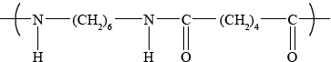

HL Paper 2
Esters and amides can be produced by condensation reactions.
Under certain conditions but-2-ene can react with water to form butan-2-ol.
State the names of two organic compounds required to produce ethyl methanoate and state suitable reaction conditions.
Deduce the structure of the simplest repeating unit of the polymer formed from the reaction between 1,6-diaminohexane and hexane-1,6-dioic acid and state one use of this product.
State and explain how the rate of step II would differ if 2-chlorobutane was used instead of 2-bromobutane.
Markscheme
ethanol and methanoic acid/methanoic anhydride/methanoyl chloride;
\({{\text{H}}_2}{\text{S}}{{\text{O}}_4}/{{\text{H}}^ + }\) and heat;

Award [1] for the correct amide link.
Award [1] if the rest of the structure is correct.
nylon fabric / clothing / ropes;
slower rate because carbon to chlorine bond stronger than carbon to bromine bond / OWTTE;
Examiners report
In part (a) most candidates correctly named both compounds but did not state both the catalyst and heat as necessary conditions for the production of ethyl methanoate.
Several candidates had difficulty in deducing the structure of the simplest repeating unit but most knew the uses of the product.
Assessment statements 10.6 and 20.5 state that reagents, conditions and equations are required. Most candidates correctly explained the effect of chlorine rather than bromine on the rate of the substitution reaction.
Ethanol has many industrial uses.
State an equation for the formation of ethanol from ethene and the necessary reaction conditions.
Equation:
Conditions:
Define the term average bond enthalpy.
Ethanol can be used as a fuel. Determine the enthalpy of combustion of ethanol at 298 K, in \({\text{kJ}}\,{\text{mo}}{{\text{l}}^{ - {\text{1}}}}\), using the values in table 10 of the data booklet, assuming all reactants and products are gaseous.
Students can also measure the enthalpy of combustion of ethanol in the laboratory using calorimetry. Suggest the major source of systematic error in these procedures.
State the equation for the acid-catalysed reaction of ethanol with propanoic acid and state the name of the organic product.
Equation:
Name of the organic product:
A polyester can be formed when ethane-1,2-diol reacts with benzene-1,4-dicarboxylic acid.
Deduce the structure of the repeating unit and state the other product formed.
Repeating unit:
Other product:
State the type of polymerization that occurs.
The standard enthalpy change of combustion, \(\Delta H_{\text{c}}^\Theta \), of propanoic acid is \( - 1527{\text{ kJ}}\,{\text{mo}}{{\text{l}}^{ - 1}}\). Determine the standard enthalpy change of formation of propanoic acid, in \({\text{kJ}}\,{\text{mo}}{{\text{l}}^{ - 1}}\), using this information and data from table 12 of the data booklet.
Deduce, giving a reason, the sign of the standard entropy change of the system for the formation of propanoic acid from its elements.
Identify three allotropes of carbon and describe their structures.
Markscheme
Equation:
\({\text{C}}{{\text{H}}_{\text{2}}}{\text{C}}{{\text{H}}_{\text{2}}} + {{\text{H}}_{\text{2}}}{\text{O}} \to {\text{C}}{{\text{H}}_{\text{3}}}{\text{C}}{{\text{H}}_{\text{2}}}{\text{OH/}}{{\text{C}}_2}{{\text{H}}_4} + {{\text{H}}_2}{\text{O}} \to {{\text{C}}_2}{{\text{H}}_5}{\text{OH}}\);
Conditions:
(concentrated) sulfuric acid/\({{\text{H}}_2}{\text{S}}{{\text{O}}_4}\);
Do not accept dilute sulfuric acid.
Accept phosphoric acid/\({H_3}P{O_4}\) (on pellets of silicon dioxide) (for industrial preparation).
heat / high temperature;
Do not accept warm.
Accept high pressure (for industrial preparation) for M3 only if \({H_3}P{O_4}\) is given for M2.
energy needed to break (1 mol of) a bond in the gaseous state/phase;
(averaged over) similar compounds;
Do not accept “similar bonds” instead of “similar compounds”.
Concept of “similar” is important for M2.
\({\text{C}}{{\text{H}}_3}{\text{C}}{{\text{H}}_2}{\text{OH}} + {\text{3}}{{\text{O}}_2} \to {\text{2C}}{{\text{O}}_2} + {\text{3}}{{\text{H}}_2}{\text{O}}\);
Bonds broken:
\(347 + (5 \times 413) + 358 + 464 + (3 \times 498)/4728{\text{ (kJ)}}/{\text{C–C}} + 5{\text{C–H}} + {\text{C–O}} + {\text{O–H}} + {\text{3O=O}}\);
Bonds made:
\((4 \times 746) + (6 \times 464) = 5768{\text{ (kJ)}}/{\text{4C = O}} + {\text{6O–H}}\);
\(\Delta H = (4728 - 5768 = ) - 1040{\text{ }}({\text{kJ}}\,{\text{mo}}{{\text{l}}^{ - 1}})\) / bonds broken − bonds formed;
Award [4] for correct final answer.
Award [3] for (+)1040 (\(kJ\,mo{l^{ - 1}}\)).
heat loss (to the surroundings);
\({\text{C}}{{\text{H}}_3}{\text{C}}{{\text{H}}_2}{\text{OH}} + {\text{C}}{{\text{H}}_3}{\text{C}}{{\text{H}}_2}{\text{COOH}} \rightleftharpoons {\text{C}}{{\text{H}}_3}{\text{C}}{{\text{H}}_2}{\text{OOCCH2C}}{{\text{H}}_3} + {{\text{H}}_2}{\text{O}}\);
ethyl propanoate;
Do not penalize if equilibrium arrow missing.
Repeating unit:
 ;
;
Continuation lines must be shown.
Ignore brackets and n.
Accept condensed formulas such as \(C{H_2}\) and \({C_6}{H_4}\).
Other product:
\({{\text{H}}_{\text{2}}}{\text{O}}\)/water;
condensation;
\({\text{3C(s)}} + {\text{3}}{{\text{H}}_2}{\text{(g)}} + {{\text{O}}_2}{\text{(g)}} \to {\text{C}}{{\text{H}}_{\text{3}}}{\text{C}}{{\text{H}}_{\text{2}}}{\text{COOH(l)}}\);
\(\Delta H_{\text{f}}^\Theta = \sum \Delta H_{\text{c}}^\Theta {\text{ (reactants)}} - \sum {\Delta H_{\text{c}}^\Theta {\text{ (products)}}} \);
Accept any suitable energy cycle.
\(\sum {\Delta H_{\text{c}}^\Theta {\text{ (reactants)}}} = 3 \times ( - 394) + 3 \times ( - 286)/ - 2040{\text{ (kJ}}\,{\text{mo}}{{\text{l}}^{ - 1}})\);
\((\Delta H_{\text{f}}^\Theta = [3 \times ( - 394) + 3 \times ( - 286)] - ( - 1527) = ) - 513{\text{ (kJ}}\,{\text{mo}}{{\text{l}}^{ - 1}})\);
OR
\({\text{C}}{{\text{H}}_3}{\text{C}}{{\text{H}}_2}{\text{COOH(l)}} + {\text{3.5}}{{\text{O}}_2}{\text{(g)}} \to {\text{3C}}{{\text{O}}_2}{\text{(g)}} + {\text{3}}{{\text{H}}_2}{\text{O(g)}}\);
\(\Delta H_{\text{c}}^\Theta = \sum {\Delta H_{\text{f}}^\Theta {\text{ }}(products)} - \sum {\Delta H_{\text{f}}^\Theta {\text{ }}(reactants)} \);
\(\sum {\Delta H_{\text{f}}^\Theta {\text{ (products)}}} = 3 \times ( - 394) + 3 \times ( - 286)/ - 2040{\text{ (kJ}}\,{\text{mo}}{{\text{l}}^{ - 1}}{\text{)}}\);
\({\text{(}}\Delta H_{\text{f}}^\Theta = [3 \times ( - 394) + 3 \times ( - 286)] - ( - 1527) = ) - 513{\text{ (kJ}}\,{\text{mo}}{{\text{l}}^{ - 1}}{\text{)}}\);
Ignore state symbols.
Award [4] for correct final answer.
negative;
reduction in the number of gaseous molecules;
Allotropes:
Any three allotropes for [1] from:
diamond
graphite
fullerene
graphene;
Allow (carbon) nanotubes for graphene.
Accept \({C_{{\text{60}}}}\)/\({C_{{\text{70}}}}\)/buckminsterfullerene/bucky balls for fullerene.
Structures:
Any three for [3] from:
Diamond:
tetrahedral arrangement of (carbon) atoms/each carbon bonded to four others / \({\text{s}}{{\text{p}}^{\text{3}}}\) and 3D/covalent network structure;
Graphite:
each carbon bonded to three others (in a trigonal planar arrangement) / \({\text{s}}{{\text{p}}^{\text{2}}}\) and 2D / layers of (carbon) atoms;
Fullerene:
each (carbon) atom bonded to three others (in a trigonal arrangement) / \({\text{s}}{{\text{p}}^{\text{2}}}\) and joined in a ball/cage/sphere/connected hexagons and pentagons;
Accept “trigonal planar” for “each carbon atom bonded to three others” part in M4.
Graphene:
each carbon bonded to three others (in a trigonal arrangement) / \({\text{s}}{{\text{p}}^{\text{2}}}\) and 2D structure;
Examiners report
There was poor understanding of the transformation in (a). When defining the average bond enthalpy in (b), the notion of “gaseous” was frequently omitted and very few mentioned the bonds being in similar compounds. In the calculation, many omitted the C–C bond and many did not work from a properly balanced equation which led to disaster. Nearly every candidate attempting this question was able to suggest “heat loss”. In (d) the usual errors were made; the name was the wrong way round, water was missing from the equation and wrong products (such as pentanoic acid) were suggested. In (e) (i) the diagrams were poor but water was usually given correctly. Most gave condensation as the type of polymerization. The key to gaining marks in questions such as (f) (i) is to start with a balanced equation, [1 mark], and then set the calculation out correctly and tidily. Part marks cannot be given if the examiner cannot follow what the candidate is doing. Many correctly gave “negative” in (ii) but the explanations lacked clarity. Most gained a mark in (g) for knowing three allotropes but the description of structures was poorly done. The [4] (marks) for this part gives some idea of the amount of detail expected.
There was poor understanding of the transformation in (a). When defining the average bond enthalpy in (b), the notion of “gaseous” was frequently omitted and very few mentioned the bonds being in similar compounds. In the calculation, many omitted the C–C bond and many did not work from a properly balanced equation which led to disaster. Nearly every candidate attempting this question was able to suggest “heat loss”. In (d) the usual errors were made; the name was the wrong way round, water was missing from the equation and wrong products (such as pentanoic acid) were suggested. In (e) (i) the diagrams were poor but water was usually given correctly. Most gave condensation as the type of polymerization. The key to gaining marks in questions such as (f) (i) is to start with a balanced equation, [1 mark], and then set the calculation out correctly and tidily. Part marks cannot be given if the examiner cannot follow what the candidate is doing. Many correctly gave “negative” in (ii) but the explanations lacked clarity. Most gained a mark in (g) for knowing three allotropes but the description of structures was poorly done. The [4] (marks) for this part gives some idea of the amount of detail expected.
There was poor understanding of the transformation in (a). When defining the average bond enthalpy in (b), the notion of “gaseous” was frequently omitted and very few mentioned the bonds being in similar compounds. In the calculation, many omitted the C–C bond and many did not work from a properly balanced equation which led to disaster. Nearly every candidate attempting this question was able to suggest “heat loss”. In (d) the usual errors were made; the name was the wrong way round, water was missing from the equation and wrong products (such as pentanoic acid) were suggested. In (e) (i) the diagrams were poor but water was usually given correctly. Most gave condensation as the type of polymerization. The key to gaining marks in questions such as (f) (i) is to start with a balanced equation, [1 mark], and then set the calculation out correctly and tidily. Part marks cannot be given if the examiner cannot follow what the candidate is doing. Many correctly gave “negative” in (ii) but the explanations lacked clarity. Most gained a mark in (g) for knowing three allotropes but the description of structures was poorly done. The [4] (marks) for this part gives some idea of the amount of detail expected.
There was poor understanding of the transformation in (a). When defining the average bond enthalpy in (b), the notion of “gaseous” was frequently omitted and very few mentioned the bonds being in similar compounds. In the calculation, many omitted the C–C bond and many did not work from a properly balanced equation which led to disaster. Nearly every candidate attempting this question was able to suggest “heat loss”. In (d) the usual errors were made; the name was the wrong way round, water was missing from the equation and wrong products (such as pentanoic acid) were suggested. In (e) (i) the diagrams were poor but water was usually given correctly. Most gave condensation as the type of polymerization. The key to gaining marks in questions such as (f) (i) is to start with a balanced equation, [1 mark], and then set the calculation out correctly and tidily. Part marks cannot be given if the examiner cannot follow what the candidate is doing. Many correctly gave “negative” in (ii) but the explanations lacked clarity. Most gained a mark in (g) for knowing three allotropes but the description of structures was poorly done. The [4] (marks) for this part gives some idea of the amount of detail expected.
There was poor understanding of the transformation in (a). When defining the average bond enthalpy in (b), the notion of “gaseous” was frequently omitted and very few mentioned the bonds being in similar compounds. In the calculation, many omitted the C–C bond and many did not work from a properly balanced equation which led to disaster. Nearly every candidate attempting this question was able to suggest “heat loss”. In (d) the usual errors were made; the name was the wrong way round, water was missing from the equation and wrong products (such as pentanoic acid) were suggested. In (e) (i) the diagrams were poor but water was usually given correctly. Most gave condensation as the type of polymerization. The key to gaining marks in questions such as (f) (i) is to start with a balanced equation, [1 mark], and then set the calculation out correctly and tidily. Part marks cannot be given if the examiner cannot follow what the candidate is doing. Many correctly gave “negative” in (ii) but the explanations lacked clarity. Most gained a mark in (g) for knowing three allotropes but the description of structures was poorly done. The [4] (marks) for this part gives some idea of the amount of detail expected.
There was poor understanding of the transformation in (a). When defining the average bond enthalpy in (b), the notion of “gaseous” was frequently omitted and very few mentioned the bonds being in similar compounds. In the calculation, many omitted the C–C bond and many did not work from a properly balanced equation which led to disaster. Nearly every candidate attempting this question was able to suggest “heat loss”. In (d) the usual errors were made; the name was the wrong way round, water was missing from the equation and wrong products (such as pentanoic acid) were suggested. In (e) (i) the diagrams were poor but water was usually given correctly. Most gave condensation as the type of polymerization. The key to gaining marks in questions such as (f) (i) is to start with a balanced equation, [1 mark], and then set the calculation out correctly and tidily. Part marks cannot be given if the examiner cannot follow what the candidate is doing. Many correctly gave “negative” in (ii) but the explanations lacked clarity. Most gained a mark in (g) for knowing three allotropes but the description of structures was poorly done. The [4] (marks) for this part gives some idea of the amount of detail expected.
There was poor understanding of the transformation in (a). When defining the average bond enthalpy in (b), the notion of “gaseous” was frequently omitted and very few mentioned the bonds being in similar compounds. In the calculation, many omitted the C–C bond and many did not work from a properly balanced equation which led to disaster. Nearly every candidate attempting this question was able to suggest “heat loss”. In (d) the usual errors were made; the name was the wrong way round, water was missing from the equation and wrong products (such as pentanoic acid) were suggested. In (e) (i) the diagrams were poor but water was usually given correctly. Most gave condensation as the type of polymerization. The key to gaining marks in questions such as (f) (i) is to start with a balanced equation, [1 mark], and then set the calculation out correctly and tidily. Part marks cannot be given if the examiner cannot follow what the candidate is doing. Many correctly gave “negative” in (ii) but the explanations lacked clarity. Most gained a mark in (g) for knowing three allotropes but the description of structures was poorly done. The [4] (marks) for this part gives some idea of the amount of detail expected.
There was poor understanding of the transformation in (a). When defining the average bond enthalpy in (b), the notion of “gaseous” was frequently omitted and very few mentioned the bonds being in similar compounds. In the calculation, many omitted the C–C bond and many did not work from a properly balanced equation which led to disaster. Nearly every candidate attempting this question was able to suggest “heat loss”. In (d) the usual errors were made; the name was the wrong way round, water was missing from the equation and wrong products (such as pentanoic acid) were suggested. In (e) (i) the diagrams were poor but water was usually given correctly. Most gave condensation as the type of polymerization. The key to gaining marks in questions such as (f) (i) is to start with a balanced equation, [1 mark], and then set the calculation out correctly and tidily. Part marks cannot be given if the examiner cannot follow what the candidate is doing. Many correctly gave “negative” in (ii) but the explanations lacked clarity. Most gained a mark in (g) for knowing three allotropes but the description of structures was poorly done. The [4] (marks) for this part gives some idea of the amount of detail expected.
There was poor understanding of the transformation in (a). When defining the average bond enthalpy in (b), the notion of “gaseous” was frequently omitted and very few mentioned the bonds being in similar compounds. In the calculation, many omitted the C–C bond and many did not work from a properly balanced equation which led to disaster. Nearly every candidate attempting this question was able to suggest “heat loss”. In (d) the usual errors were made; the name was the wrong way round, water was missing from the equation and wrong products (such as pentanoic acid) were suggested. In (e) (i) the diagrams were poor but water was usually given correctly. Most gave condensation as the type of polymerization. The key to gaining marks in questions such as (f) (i) is to start with a balanced equation, [1 mark], and then set the calculation out correctly and tidily. Part marks cannot be given if the examiner cannot follow what the candidate is doing. Many correctly gave “negative” in (ii) but the explanations lacked clarity. Most gained a mark in (g) for knowing three allotropes but the description of structures was poorly done. The [4] (marks) for this part gives some idea of the amount of detail expected.
There was poor understanding of the transformation in (a). When defining the average bond enthalpy in (b), the notion of “gaseous” was frequently omitted and very few mentioned the bonds being in similar compounds. In the calculation, many omitted the C–C bond and many did not work from a properly balanced equation which led to disaster. Nearly every candidate attempting this question was able to suggest “heat loss”. In (d) the usual errors were made; the name was the wrong way round, water was missing from the equation and wrong products (such as pentanoic acid) were suggested. In (e) (i) the diagrams were poor but water was usually given correctly. Most gave condensation as the type of polymerization. The key to gaining marks in questions such as (f) (i) is to start with a balanced equation, [1 mark], and then set the calculation out correctly and tidily. Part marks cannot be given if the examiner cannot follow what the candidate is doing. Many correctly gave “negative” in (ii) but the explanations lacked clarity. Most gained a mark in (g) for knowing three allotropes but the description of structures was poorly done. The [4] (marks) for this part gives some idea of the amount of detail expected.
Iron rusts in the presence of oxygen and water. Rusting is a redox process involving several steps that produces hydrated iron(III) oxide, \({\text{F}}{{\text{e}}_{\text{2}}}{{\text{O}}_{\text{3}}} \bullet {\text{n}}{{\text{H}}_{\text{2}}}{\text{O}}\), as the final product.
The half-equations involved for the first step of rusting are given below.
Half-equation 1: \({\text{Fe(s)}} \to {\text{F}}{{\text{e}}^{2 + }}{\text{(aq)}} + {\text{2}}{{\text{e}}^ - }\)
Half-equation 2: \({{\text{O}}_{\text{2}}}{\text{(aq)}} + {\text{4}}{{\text{e}}^ - } + {\text{2}}{{\text{H}}_{\text{2}}}{\text{O(l)}} \to {\text{4O}}{{\text{H}}^ - }{\text{(aq)}}\)
(i) Identify whether half-equation 1 represents oxidation or reduction, giving a reason for your answer.
(ii) Identify the oxidation number of each atom in the three species in half-equation 2.

(iii) Deduce the overall redox equation for the first step of rusting by combining half-equations 1 and 2.
(iv) Identify the reducing agent in the redox equation in part (iii).
The oxygen in half-equation 2 is atmospheric oxygen that is found dissolved in water in very small concentrations. Explain, in terms of intermolecular forces, why oxygen is not very soluble in water.
State the relationship between the electron arrangement of an element and its group and period in the periodic table.
Transition metals and their compounds often catalyse reactions. The catalyzed decomposition of hydrogen peroxide by CuO is an example. State two other examples of catalyzed reactions giving the transition metal or its compound acting as catalyst.
(i) State a chemical equation for the partial dissociation of water into ions, including state symbols.
(ii) The dissociation of water into ions is reversible. State the expression for the ionic product constant of water.
(iii) The ionic product constant of water was measured at three different temperatures.

Deduce whether the ionization of water is exothermic or endothermic, giving your reason.
(iv) Use the data in part (iii) to determine the pH of water at 373 K, correct to two decimal places.
(i) An aqueous solution of sodium chloride is electrolysed using inert electrodes. Explain which product is obtained at the positive electrode (anode) if the concentration of sodium chloride is high.
(ii) State the half-equations occurring at the electrodes during the electrolysis of the concentrated aqueous solution of sodium chloride.
Negative electrode (cathode):
Positive electrode (anode):
Describe how electrolysis can be used to electroplate a bracelet with a layer of silver metal. Include the choice of electrodes and electrolyte needed in your description.
Markscheme
(i) oxidation and (iron/Fe) loses electrons/increases in oxidation number/state;
(ii)  ;
;
Award [2] for five correct.
Award [1] for four correct.
Accept use of oxidation states (0, +1, –2, –2, +1) for oxidation numbers.
Penalize once for incorrect notation (eg, 2, 2–).
(iii) \({{\text{O}}_2}{\text{(aq)}} + {\text{2}}{{\text{H}}_2}{\text{O(l)}} + {\text{2Fe(s)}} \to {\text{2F}}{{\text{e}}^{2 + }}{\text{(aq)}} + {\text{4O}}{{\text{H}}^ - }{\text{(aq)}}\);
Ignore state symbols.
(iv) Fe/iron;
needs to break strong hydrogen bonds/H–bonds between water molecules (to dissolve) / oxygen cannot form hydrogen bonds/H–bonds with water;
oxygen can only form (weak) van der Waals’/vdW/LDF/London/dispersion forces with water;
groups indicate the number of electrons in the highest energy level/outer/valence shell;
periods indicate the number of (occupied) energy levels/shells (in the atom);
\({{\text{V}}_{\text{2}}}{{\text{O}}_{\text{5}}}\) catalyses oxidation of \({\text{S}}{{\text{O}}_{\text{2}}}\) / \({{\text{V}}_{\text{2}}}{{\text{O}}_{\text{5}}}\) is a catalyst in the Contact Process;
Fe catalyses the reaction between \({{\text{N}}_{\text{2}}}\) and \({{\text{H}}_{\text{2}}}\) / Fe is a catalyst in the Haber Process;
Ni/Pd/Pt catalyses hydrogenation / manufacture of margarine / addition of hydrogen to C=C / conversion of alkenes to alkanes;
Pd/Pt is a catalyst in catalytic converters / Pd/Pt catalyzes reaction of \({\text{N}}{{\text{O}}_{\text{2}}}\) and CO/\({\text{N}}{{\text{O}}_{\text{2}}}\) and (unburnt) fuel/exhaust gases;
Accept other correct examples.
Accept formulas or names of substances.
(i) \({{\text{H}}_2}{\text{O(l)}} \rightleftharpoons {{\text{H}}^ + }{\text{(aq)}} + {\text{O}}{{\text{H}}^ - }{\text{(aq)}}/{\text{2}}{{\text{H}}_2}{\text{O(l)}} \rightleftharpoons {{\text{H}}_3}{{\text{O}}^ + }{\text{(aq)}} + {\text{O}}{{\text{H}}^ - }{\text{(aq)}}\);
\( \rightleftharpoons \) and state symbols are necessary for the mark.
(ii) \({K_w} = {\text{[}}{{\text{H}}^ + }{\text{][O}}{{\text{H}}^ - }{\text{]}}/{K_w} = {\text{[}}{{\text{H}}_3}{{\text{O}}^ + }{\text{][O}}{{\text{H}}^ - }{\text{]}}\);
(iii) at higher temperatures ionization increases / at higher temperatures equilibrium shifts to right;
ionization is endothermic;
Do not allow ECF for M2.
(iv) \({\text{5.13}} \times {\text{1}}{{\text{0}}^{ - 13}} = {{\text{[}}{{\text{H}}_3}{{\text{O}}^ + }{\text{]}}^2}/{{\text{[}}{{\text{H}}^ + }{\text{]}}^2}/{\text{[}}{{\text{H}}_3}{{\text{O}}^ + }{\text{]}}/{\text{[}}{{\text{H}}^ + }{\text{]}} = {\text{7.16}} \times {\text{1}}{{\text{0}}^{ - 7}}{\text{ (mol}}\,{\text{d}}{{\text{m}}^{ - 3}}{\text{)}}\);
\({\text{pH}} = 6.14/6.15\);
Award [2] for correct final answer.
(i) chlorine/\({\text{C}}{{\text{l}}_{\text{2}}}\) (is produced at the positive electrode/anode);
according to electrochemical series/ \(E^\circ \) values/ease of oxidation \({\text{O}}{{\text{H}}^ - }\)/\({{\text{H}}_{\text{2}}}{\text{O}}\) reacts/oxygen is released / OWTTE / at low chloride concentration \({\text{O}}{{\text{H}}^ - }\)/\({{\text{H}}_{\text{2}}}{\text{O}}\) reacts/oxygen is released;
high concentration makes \({\text{C}}{{\text{l}}^ - }\) oxidize/react in preference to \({\text{O}}{{\text{H}}^ - }\)/\({{\text{H}}_{\text{2}}}{\text{O}}\) / OWTTE;
(ii) Negative electrode (cathode):
\({\text{2}}{{\text{H}}^ + }{\text{(aq)}} + {\text{2}}{{\text{e}}^ - } \to {{\text{H}}_2}{\text{(g)}}/{{\text{H}}^ + }{\text{(aq)}} + {{\text{e}}^ - } \to \frac{1}{2}{{\text{H}}_2}{\text{(g)}}/{\text{2}}{{\text{H}}_2}{\text{O(l)}} + {\text{2}}{{\text{e}}^ - } \to {{\text{H}}_2}{\text{(g)}} + {\text{2O}}{{\text{H}}^ - }{\text{(aq)}}\);
Positive electrode (anode):
\({\text{2C}}{{\text{l}}^ - }{\text{(aq)}} \to {\text{C}}{{\text{l}}_2}{\text{(g)}} + {\text{2}}{{\text{e}}^ - }/{\text{C}}{{\text{l}}^ - }{\text{(aq)}} \to \frac{1}{2}{\text{C}}{{\text{l}}_2}{\text{(g)}} + {{\text{e}}^ - }/{\text{2C}}{{\text{l}}^ - }{\text{(aq)}} - {\text{2}}{{\text{e}}^ - } \to {\text{C}}{{\text{l}}_2}{\text{(g)}}/\)
\({\text{C}}{{\text{l}}^ - }{\text{(aq)}} - {{\text{e}}^ - } \to \frac{1}{2}{\text{C}}{{\text{l}}_2}{\text{(g)}}\);
Ignore state symbols.
Accept e instead of e–.
Award [1] if half-equations are correct but placed at the wrong electrodes.
bracelet/object to be electroplated is the cathode/negative electrode;
silver anode/positive electrode;
Accept Pt anode.
Electrolyte: liquid \({\text{Na[Ag(C}}{{\text{N}}_{\text{2}}}{\text{)]}}\)/sodium dicyanoargentate/\({{\text{[Ag(CN}}{{\text{)}}_{\text{2}}}{\text{]}}^ - }\)/ solution of an appropriate silver salt;
Accept AgNO3/silver nitrate.
All marks can be scored with a labelled diagram.
Examiners report
(i) Very well answered.
(ii) Most candidates answered correctly. The most common mistakes were doubling the oxidation number of H in \({{\text{H}}_{\text{2}}}{\text{O}}\), and entering a wrong oxidation number for elemental oxygen.
(iii) A well-answered question.
The aqueous solubility of oxygen gas was often poorly explained, with the discussion focussing on the intermolecular forces found in each substance separately and then stating that “like dissolves like”.
Well answered by most candidates.
The majority of candidates were able to give two valid examples of transition metals or their compounds acting as catalysts.
(i) Very well answered.
(ii) Well answered.
(iii) About half of the candidates were able to gain full marks. Some candidates found difficulty in connecting the increase in \({K_{\text{w}}}\) to the position of equilibrium.
(iv) About half of the candidates were able to calculate the pH from the \({K_{\text{w}}}\) value.
(i) Many candidates identified chlorine as the product, but the other two marks were more discriminating. Some candidates clarified that \({\text{C}}{{\text{l}}^ - }\) was oxidized in preference to OH- because of its high concentration, but very few related the situation to the electrochemical series.
(ii) This was poorly answered by many candidates. Common mistakes included releasing sodium at the cathode, reversing electrodes and unbalanced redox half-reactions where the electrons were sometimes on the wrong side of the equation.
Very well answered. Most candidates determined both electrodes correctly. The main difficulty for some candidates was choosing a suitable electrolyte.
Magnesium, a reactive metal found in many common minerals, is also an essential nutrient for both plants and animals.
Successive ionization energies of magnesium are given in the table below.

Magnesium metal is mainly used as a component in lightweight alloys, particularly in combination with aluminium and titanium.
Magnesium is usually produced by the electrolysis of molten magnesium chloride.
Define the term first ionization energy.
(i) Explain why the second ionization energy is greater than the first ionization energy.
(ii) Explain why the third ionization energy is much greater than the second ionization energy.
Although magnesium is usually found as \({\text{M}}{{\text{g}}^{2 + }}\) in its compounds, it is possible to use the Born-Haber cycle to investigate the possibility of \({\text{M}}{{\text{g}}^ + }\) being able to form stable compounds.
Use the ionization energy data from part (b), along with the other data provided below, to determine the enthalpy change of formation of MgCl(s). Assume that, because \({\text{M}}{{\text{g}}^ + }\) would be similar in size to \({\text{N}}{{\text{a}}^ + }\), MgCl would have a similar lattice enthalpy to NaCl.
Enthalpy of atomization of Mg \( + 146{\text{ kJ}}\,{\text{mo}}{{\text{l}}^{ - 1}}\)
Bond enthalpy in \({\text{C}}{{\text{l}}_{\text{2}}}\) \( + 243{\text{ kJ}}\,{\text{mo}}{{\text{l}}^{ - 1}}\)
Electron affinity of Cl \( + 349{\text{ kJ}}\,{\text{mo}}{{\text{l}}^{ - 1}}\)
Lattice enthalpy of NaCl \( + 790{\text{ kJ}}\,{\text{mo}}{{\text{l}}^{ - 1}}\)
Consider the lattice enthalpies of \({\text{Mg}}{{\text{F}}_{\text{2}}}\), \({\text{MgC}}{{\text{l}}_2}\) and \({\text{CaC}}{{\text{l}}_{\text{2}}}\). List these from the most endothermic to the least endothermic and explain your order.
\({\text{Most endothermic}} \to {\text{Least endothermic}}\)
Magnesium hydroxide, \({\text{Mg(OH}}{{\text{)}}_{\text{2}}}\), is only sparingly soluble in water and the equilibrium below exists when excess solid is in contact with a saturated solution.
\[{\text{Mg(OH}}{{\text{)}}_2}{\text{(s)}} \rightleftharpoons {\text{M}}{{\text{g}}^{2 + }}{\text{(aq)}} + {\text{2O}}{{\text{H}}^ - }{\text{(aq)}}\]
Outline how the solubility of magnesium hydroxide will vary with pH.
(i) Describe the bonding present in magnesium metal.
(ii) Suggest why magnesium is harder than sodium.
(iii) Outline why alloys are generally less malleable than their component metals.
(i) Draw a labelled diagram of a suitable apparatus for the electrolysis.
(ii) State equations for the reactions that take place at the electrodes.
Negative electrode (cathode) reaction:
Positive electrode (anode) reaction:
(iii) When dilute aqueous magnesium chloride is used as the electrolyte, the reactions at both electrodes are different. State equations for the reactions that occur in aqueous solution.
Negative electrode (cathode) reaction:
Positive electrode (anode) reaction:
(iv) Outline why magnesium metal is not produced in the electrolysis of aqueous magnesium chloride.
Markscheme
minimum energy required to remove one electron / energy required to remove most loosely bound/outermost electron;
from gaseous/isolated atom;
Accept “gaseous state”.
More extensive definitions involving one mole may be given.
(i) electrons lost in same orbital/valence shell;
(second) electron/electron (being lost from \({\text{M}}{{\text{g}}^ + }\) is) closer to the nucleus;
(second) electron/electron (being lost from \({\text{M}}{{\text{g}}^ + }\)) not subject to e-e repulsion from others in same level;
Apply OWTTE for all marking points.
Do not accept “less electrons to share the charge” or answers employing this concept.
(ii) electron in lower energy level / more stable electron shell;
electron closer to nucleus;
less shielding by complete inner shells / increase in effective nuclear charge;
Apply OWTTE for all marking points.
\(\Delta {H_{{\text{at}}}}{\text{(Cl)}} = \frac{1}{2} \times 243{\text{ (kJ}}\,{\text{mo}}{{\text{l}}^{ - 1}}{\text{)}}\);
Correct calculation of atomization enthalpy of Cl.
\(\Delta {H_{\text{f}}} = + 146 + \frac{1}{2}243 + 738 + ( - 349) + ( - 790)\);
Correct sign and magnitude of all terms.
\( = - {\text{134 (kJ}}\,{\text{mo}}{{\text{l}}^{ - 1}}{\text{)}}\);
Award [3] for correct final answer.
Final mark involves correct computation of equation the student has produced.
Award [2] for –12 (bond enthalpy of Cl not halved) or +134 (signs wrong).
Award [1] for +12 (bond enthalpy of Cl not halved and signs wrong).
\({\text{Mg}}{{\text{F}}_2}\) –\({\text{MgC}}{{\text{l}}_2}\) –\({\text{CaC}}{{\text{l}}_2}\);
\({{\text{F}}^ - }\) smaller (ionic radius) than \({\text{C}}{{\text{l}}^ - }\) / \({\text{C}}{{\text{l}}^ - }\) larger (ionic radius) than \({{\text{F}}^ - }\);
\({\text{M}}{{\text{g}}^{2 + }}\) smaller (ionic radius) than \({\text{C}}{{\text{a}}^{2 + }}\) / \({\text{C}}{{\text{a}}^{2 + }}\) larger (ionic radius) than \({\text{M}}{{\text{g}}^{2 + }}\);
Accept use of atomic radius rather than ionic radius.
more soluble at low pH / less soluble at high pH;
higher pH / \({\text{O}}{{\text{H}}^ - }\) will shift the equilibrium to the left / lower pH / \({{\text{H}}^ + }\) will (react with \({\text{O}}{{\text{H}}^ - }\) and) shift the equilibrium to the right;
(i) lattice/layers/framework of cations/magnesium ions/\({\text{M}}{{\text{g}}^{2 + }}\);
surrounded by delocalized electrons / in a sea/flux of delocalized electrons;
Accept “mobile” instead of “delocalized”.
(ii) Mg has more delocalized electrons (than Na);
Accept “Mg has more valence electrons than Na” / “Mg is Mg2+ but Na is only Na+”.
(iii) layers of ions/atoms/particles cannot slide over each other so easily (as different sized ions/atoms/particles) / OWTTE;
(i) 
Diagram:
two electrodes connected to a power pack/battery and immersed in an electrolyte;
Do not award mark if salt bridge included in diagram.
Labelling:
anode/positive electrode, cathode/negative electrode, molten magnesium chloride/MgCl2 (l)/electrolyte correctly labelled;
Check candidates know which end of a battery symbol is which charge.
(ii) Negative electrode (cathode): \({\text{M}}{{\text{g}}^{2 + }}{\text{(l)}} + {\text{2}}{{\text{e}}^ - } \to {\text{Mg (s)}}\);
Positive electrode (anode): \[{\text{2C}}{{\text{l}}^ - }{\text{(l)}} \to {\text{C}}{{\text{l}}_2}{\text{(g)}} + {\text{2}}{{\text{e}}^ - }\];
Accept \(C{l^ - }(l) \to \frac{1}{2}C{l_2}(g) + {e^ - }\).
Ignore state symbols.
Allow e instead of e–.
If both correct equations are given for the wrong electrodes award [1 max].
(iii) Negative electrode (cathode):
\({\text{2}}{{\text{H}}_2}{\text{O(l)}} + {\text{2}}{{\text{e}}^ - } \to {{\text{H}}_2}{\text{(g)}} + {\text{2O}}{{\text{H}}^ - }{\text{(aq)}}/{\text{2}}{{\text{H}}^ + }{\text{(aq)}} + {\text{2}}{{\text{e}}^ - } \to {{\text{H}}_2}{\text{(g)}}\);
Accept \(4{H_2}O(l) + 4{e^ - } \to 2{H_2}(g) + 4O{H^ - }(aq) / 4{H^ + }(aq) + 4{e^ - } \to 2{H_2}(g)\) / \({H_2}O(l) + {e^ - } \to \frac{1}{2}{H_2}(g) + O{H^ - }(aq)/{H^ + }(aq) + {e^ - } \to \frac{1}{2}{H_2}(g)\).
Positive electrode (anode):
\({\text{2}}{{\text{H}}_2}{\text{O(l)}} \to {{\text{O}}_2}{\text{(g)}} + {\text{4}}{{\text{H}}^ + }{\text{(aq)}} + {\text{4}}{{\text{e}}^ - }/{\text{4O}}{{\text{H}}^ - }{\text{(aq)}} \to {{\text{O}}_2}{\text{(g)}} + {\text{2}}{{\text{H}}_2}{\text{O(l)}} + {\text{4}}{{\text{e}}^ - }\);
Accept \({H_2}O(l) \to \frac{1}{2}{O_2}(g) + 2{H^ + }(aq) + 2{e^ - } / 2O{H^ - }(aq) \to \frac{1}{2}{O_2}(g) + {H_2}O(l) + 2{e^ - }\).
State symbols not required.
Allow e instead of e–.
If both correct equations are given for the wrong electrodes award [1 max].
(iv) water/hydrogen ions more easily reduced/better oxidizing agents/have a more positive \({E^\Theta }\) (than magnesium ions);
Accept converse statements for magnesium ions.
Accept “magnesium is very reactive/high in reactivity series” / OWTTE.
Examiners report
This was the most popular of the Section B questions, which was surprising because it was often not well answered. Most students were aware of the change involved in ionization, some realised this relates to the most easily lost electron, some that it refers to gas phase changes and a few both. Explanations of the changes in the values of successive ionization energies in terms of the attraction of the nucleus and the repulsion from other electrons were generally weak, however candidates quite often recognised that the third electron lost had to come from a more stable electron energy level. Very few were able to correctly sum the enthalpy terms involved in the Born-Haber cycle, in addition candidates rarely halved the bond enthalpy of chlorine and a significant number appeared not to realise the question referred to MgCl rather than \({\text{MgC}}{{\text{l}}_2}\). There were some G2 comments that space should have been left for students to draw a cycle, but this would have implied that such a drawing was required, hence it is better to train students to use additional paper for any background support they may require. Quite a lot of students correctly deduced the order of lattice enthalpy of the group (II) halides, and a number correctly explained this in terms of ionic radii, though many incorrectly invoked electronegativities. Many students could correctly explain the effect of pH on the solubility of \({\text{Mg(OH}}{{\text{)}}_{\text{2}}}\), though a significant number attempted to answer the opposite question; how pH would depend on the concentration of dissolved \({\text{Mg(OH}}{{\text{)}}_{\text{2}}}\)! It was surprising how few students could correctly describe metallic bonding, how it is affected by the number of delocalized electrons per cation and the way it leads to malleability. Alloys are not specifically mentioned in the syllabus but the mark scheme gave credit for answers that indicated the student was aware that malleability is associated with layers of metal atoms/cations sliding over each other. Most students were able to draw appropriately labelled diagrams of electrolysis apparatus, though sometimes the labelling of the polarity of the electrodes did not correspond to the polarity of the battery symbol drawn. Quite a few candidates could quote equations for the reactions occurring the electrodes in both the liquid and aqueous state; both seemed to be equally well answered which was perhaps a little surprisingly. Many could also give good explanations as to why electrolysis of the aqueous solution did not produce magnesium metal, though confusions in terminology (such as hydrogen rather than hydrogen ions being reduced) were not uncommon.
This was the most popular of the Section B questions, which was surprising because it was often not well answered. Most students were aware of the change involved in ionization, some realised this relates to the most easily lost electron, some that it refers to gas phase changes and a few both. Explanations of the changes in the values of successive ionization energies in terms of the attraction of the nucleus and the repulsion from other electrons were generally weak, however candidates quite often recognised that the third electron lost had to come from a more stable electron energy level. Very few were able to correctly sum the enthalpy terms involved in the Born-Haber cycle, in addition candidates rarely halved the bond enthalpy of chlorine and a significant number appeared not to realise the question referred to MgCl rather than \({\text{MgC}}{{\text{l}}_2}\). There were some G2 comments that space should have been left for students to draw a cycle, but this would have implied that such a drawing was required, hence it is better to train students to use additional paper for any background support they may require. Quite a lot of students correctly deduced the order of lattice enthalpy of the group (II) halides, and a number correctly explained this in terms of ionic radii, though many incorrectly invoked electronegativities. Many students could correctly explain the effect of pH on the solubility of \({\text{Mg(OH}}{{\text{)}}_{\text{2}}}\), though a significant number attempted to answer the opposite question; how pH would depend on the concentration of dissolved \({\text{Mg(OH}}{{\text{)}}_{\text{2}}}\)! It was surprising how few students could correctly describe metallic bonding, how it is affected by the number of delocalized electrons per cation and the way it leads to malleability. Alloys are not specifically mentioned in the syllabus but the mark scheme gave credit for answers that indicated the student was aware that malleability is associated with layers of metal atoms/cations sliding over each other. Most students were able to draw appropriately labelled diagrams of electrolysis apparatus, though sometimes the labelling of the polarity of the electrodes did not correspond to the polarity of the battery symbol drawn. Quite a few candidates could quote equations for the reactions occurring the electrodes in both the liquid and aqueous state; both seemed to be equally well answered which was perhaps a little surprisingly. Many could also give good explanations as to why electrolysis of the aqueous solution did not produce magnesium metal, though confusions in terminology (such as hydrogen rather than hydrogen ions being reduced) were not uncommon.
This was the most popular of the Section B questions, which was surprising because it was often not well answered. Most students were aware of the change involved in ionization, some realised this relates to the most easily lost electron, some that it refers to gas phase changes and a few both. Explanations of the changes in the values of successive ionization energies in terms of the attraction of the nucleus and the repulsion from other electrons were generally weak, however candidates quite often recognised that the third electron lost had to come from a more stable electron energy level. Very few were able to correctly sum the enthalpy terms involved in the Born-Haber cycle, in addition candidates rarely halved the bond enthalpy of chlorine and a significant number appeared not to realise the question referred to MgCl rather than \({\text{MgC}}{{\text{l}}_2}\). There were some G2 comments that space should have been left for students to draw a cycle, but this would have implied that such a drawing was required, hence it is better to train students to use additional paper for any background support they may require. Quite a lot of students correctly deduced the order of lattice enthalpy of the group (II) halides, and a number correctly explained this in terms of ionic radii, though many incorrectly invoked electronegativities. Many students could correctly explain the effect of pH on the solubility of \({\text{Mg(OH}}{{\text{)}}_{\text{2}}}\), though a significant number attempted to answer the opposite question; how pH would depend on the concentration of dissolved \({\text{Mg(OH}}{{\text{)}}_{\text{2}}}\)! It was surprising how few students could correctly describe metallic bonding, how it is affected by the number of delocalized electrons per cation and the way it leads to malleability. Alloys are not specifically mentioned in the syllabus but the mark scheme gave credit for answers that indicated the student was aware that malleability is associated with layers of metal atoms/cations sliding over each other. Most students were able to draw appropriately labelled diagrams of electrolysis apparatus, though sometimes the labelling of the polarity of the electrodes did not correspond to the polarity of the battery symbol drawn. Quite a few candidates could quote equations for the reactions occurring the electrodes in both the liquid and aqueous state; both seemed to be equally well answered which was perhaps a little surprisingly. Many could also give good explanations as to why electrolysis of the aqueous solution did not produce magnesium metal, though confusions in terminology (such as hydrogen rather than hydrogen ions being reduced) were not uncommon.
This was the most popular of the Section B questions, which was surprising because it was often not well answered. Most students were aware of the change involved in ionization, some realised this relates to the most easily lost electron, some that it refers to gas phase changes and a few both. Explanations of the changes in the values of successive ionization energies in terms of the attraction of the nucleus and the repulsion from other electrons were generally weak, however candidates quite often recognised that the third electron lost had to come from a more stable electron energy level. Very few were able to correctly sum the enthalpy terms involved in the Born-Haber cycle, in addition candidates rarely halved the bond enthalpy of chlorine and a significant number appeared not to realise the question referred to MgCl rather than \({\text{MgC}}{{\text{l}}_2}\). There were some G2 comments that space should have been left for students to draw a cycle, but this would have implied that such a drawing was required, hence it is better to train students to use additional paper for any background support they may require. Quite a lot of students correctly deduced the order of lattice enthalpy of the group (II) halides, and a number correctly explained this in terms of ionic radii, though many incorrectly invoked electronegativities. Many students could correctly explain the effect of pH on the solubility of \({\text{Mg(OH}}{{\text{)}}_{\text{2}}}\), though a significant number attempted to answer the opposite question; how pH would depend on the concentration of dissolved \({\text{Mg(OH}}{{\text{)}}_{\text{2}}}\)! It was surprising how few students could correctly describe metallic bonding, how it is affected by the number of delocalized electrons per cation and the way it leads to malleability. Alloys are not specifically mentioned in the syllabus but the mark scheme gave credit for answers that indicated the student was aware that malleability is associated with layers of metal atoms/cations sliding over each other. Most students were able to draw appropriately labelled diagrams of electrolysis apparatus, though sometimes the labelling of the polarity of the electrodes did not correspond to the polarity of the battery symbol drawn. Quite a few candidates could quote equations for the reactions occurring the electrodes in both the liquid and aqueous state; both seemed to be equally well answered which was perhaps a little surprisingly. Many could also give good explanations as to why electrolysis of the aqueous solution did not produce magnesium metal, though confusions in terminology (such as hydrogen rather than hydrogen ions being reduced) were not uncommon.
This was the most popular of the Section B questions, which was surprising because it was often not well answered. Most students were aware of the change involved in ionization, some realised this relates to the most easily lost electron, some that it refers to gas phase changes and a few both. Explanations of the changes in the values of successive ionization energies in terms of the attraction of the nucleus and the repulsion from other electrons were generally weak, however candidates quite often recognised that the third electron lost had to come from a more stable electron energy level. Very few were able to correctly sum the enthalpy terms involved in the Born-Haber cycle, in addition candidates rarely halved the bond enthalpy of chlorine and a significant number appeared not to realise the question referred to MgCl rather than \({\text{MgC}}{{\text{l}}_2}\). There were some G2 comments that space should have been left for students to draw a cycle, but this would have implied that such a drawing was required, hence it is better to train students to use additional paper for any background support they may require. Quite a lot of students correctly deduced the order of lattice enthalpy of the group (II) halides, and a number correctly explained this in terms of ionic radii, though many incorrectly invoked electronegativities. Many students could correctly explain the effect of pH on the solubility of \({\text{Mg(OH}}{{\text{)}}_{\text{2}}}\), though a significant number attempted to answer the opposite question; how pH would depend on the concentration of dissolved \({\text{Mg(OH}}{{\text{)}}_{\text{2}}}\)! It was surprising how few students could correctly describe metallic bonding, how it is affected by the number of delocalized electrons per cation and the way it leads to malleability. Alloys are not specifically mentioned in the syllabus but the mark scheme gave credit for answers that indicated the student was aware that malleability is associated with layers of metal atoms/cations sliding over each other. Most students were able to draw appropriately labelled diagrams of electrolysis apparatus, though sometimes the labelling of the polarity of the electrodes did not correspond to the polarity of the battery symbol drawn. Quite a few candidates could quote equations for the reactions occurring the electrodes in both the liquid and aqueous state; both seemed to be equally well answered which was perhaps a little surprisingly. Many could also give good explanations as to why electrolysis of the aqueous solution did not produce magnesium metal, though confusions in terminology (such as hydrogen rather than hydrogen ions being reduced) were not uncommon.
This was the most popular of the Section B questions, which was surprising because it was often not well answered. Most students were aware of the change involved in ionization, some realised this relates to the most easily lost electron, some that it refers to gas phase changes and a few both. Explanations of the changes in the values of successive ionization energies in terms of the attraction of the nucleus and the repulsion from other electrons were generally weak, however candidates quite often recognised that the third electron lost had to come from a more stable electron energy level. Very few were able to correctly sum the enthalpy terms involved in the Born-Haber cycle, in addition candidates rarely halved the bond enthalpy of chlorine and a significant number appeared not to realise the question referred to MgCl rather than \({\text{MgC}}{{\text{l}}_2}\). There were some G2 comments that space should have been left for students to draw a cycle, but this would have implied that such a drawing was required, hence it is better to train students to use additional paper for any background support they may require. Quite a lot of students correctly deduced the order of lattice enthalpy of the group (II) halides, and a number correctly explained this in terms of ionic radii, though many incorrectly invoked electronegativities. Many students could correctly explain the effect of pH on the solubility of \({\text{Mg(OH}}{{\text{)}}_{\text{2}}}\), though a significant number attempted to answer the opposite question; how pH would depend on the concentration of dissolved \({\text{Mg(OH}}{{\text{)}}_{\text{2}}}\)! It was surprising how few students could correctly describe metallic bonding, how it is affected by the number of delocalized electrons per cation and the way it leads to malleability. Alloys are not specifically mentioned in the syllabus but the mark scheme gave credit for answers that indicated the student was aware that malleability is associated with layers of metal atoms/cations sliding over each other. Most students were able to draw appropriately labelled diagrams of electrolysis apparatus, though sometimes the labelling of the polarity of the electrodes did not correspond to the polarity of the battery symbol drawn. Quite a few candidates could quote equations for the reactions occurring the electrodes in both the liquid and aqueous state; both seemed to be equally well answered which was perhaps a little surprisingly. Many could also give good explanations as to why electrolysis of the aqueous solution did not produce magnesium metal, though confusions in terminology (such as hydrogen rather than hydrogen ions being reduced) were not uncommon.
This was the most popular of the Section B questions, which was surprising because it was often not well answered. Most students were aware of the change involved in ionization, some realised this relates to the most easily lost electron, some that it refers to gas phase changes and a few both. Explanations of the changes in the values of successive ionization energies in terms of the attraction of the nucleus and the repulsion from other electrons were generally weak, however candidates quite often recognised that the third electron lost had to come from a more stable electron energy level. Very few were able to correctly sum the enthalpy terms involved in the Born-Haber cycle, in addition candidates rarely halved the bond enthalpy of chlorine and a significant number appeared not to realise the question referred to MgCl rather than \({\text{MgC}}{{\text{l}}_2}\). There were some G2 comments that space should have been left for students to draw a cycle, but this would have implied that such a drawing was required, hence it is better to train students to use additional paper for any background support they may require. Quite a lot of students correctly deduced the order of lattice enthalpy of the group (II) halides, and a number correctly explained this in terms of ionic radii, though many incorrectly invoked electronegativities. Many students could correctly explain the effect of pH on the solubility of \({\text{Mg(OH}}{{\text{)}}_{\text{2}}}\), though a significant number attempted to answer the opposite question; how pH would depend on the concentration of dissolved \({\text{Mg(OH}}{{\text{)}}_{\text{2}}}\)! It was surprising how few students could correctly describe metallic bonding, how it is affected by the number of delocalized electrons per cation and the way it leads to malleability. Alloys are not specifically mentioned in the syllabus but the mark scheme gave credit for answers that indicated the student was aware that malleability is associated with layers of metal atoms/cations sliding over each other. Most students were able to draw appropriately labelled diagrams of electrolysis apparatus, though sometimes the labelling of the polarity of the electrodes did not correspond to the polarity of the battery symbol drawn. Quite a few candidates could quote equations for the reactions occurring the electrodes in both the liquid and aqueous state; both seemed to be equally well answered which was perhaps a little surprisingly. Many could also give good explanations as to why electrolysis of the aqueous solution did not produce magnesium metal, though confusions in terminology (such as hydrogen rather than hydrogen ions being reduced) were not uncommon.
The rate of reaction is an important factor in industrial processes such as the Contact process to make sulfur trioxide, \({\text{S}}{{\text{O}}_{\text{3}}}{\text{(g)}}\).
Define the term rate of reaction.
Describe the collision theory.
The Contact process involves this homogeneous equilibrium:
\[{\text{2S}}{{\text{O}}_{\text{2}}}{\text{(g)}} + {{\text{O}}_{\text{2}}}{\text{(g)}} \rightleftharpoons {\text{2S}}{{\text{O}}_{\text{3}}}{\text{(g)}}\,\,\,\,\,\Delta H = - 198{\text{ kJ}}\]
State and explain how increasing the pressure of the reaction mixture affects the yield of \({\text{S}}{{\text{O}}_{\text{3}}}\).
The Contact process involves this homogeneous equilibrium:
\[{\text{2S}}{{\text{O}}_{\text{2}}}{\text{(g)}} + {{\text{O}}_{\text{2}}}{\text{(g)}} \rightleftharpoons {\text{2S}}{{\text{O}}_{\text{3}}}{\text{(g)}}\,\,\,\,\,\Delta H = - 198{\text{ kJ}}\]
2.00 mol of \({\text{S}}{{\text{O}}_{\text{2}}}{\text{(g)}}\) are mixed with 3.00 mol of \({{\text{O}}_{\text{2}}}{\text{(g)}}\) in a \({\text{1.00 d}}{{\text{m}}^{\text{3}}}\) container until equilibrium is reached. At equilibrium there are 0.80 mol of \({\text{S}}{{\text{O}}_{\text{3}}}{\text{(g)}}\).
Determine the equilibrium constant (\({K_{\text{c}}}\)) assuming all gases are at the same temperature and pressure.
The Contact process involves this homogeneous equilibrium:
\[{\text{2S}}{{\text{O}}_{\text{2}}}{\text{(g)}} + {{\text{O}}_{\text{2}}}{\text{(g)}} \rightleftharpoons {\text{2S}}{{\text{O}}_{\text{3}}}{\text{(g)}}\,\,\,\,\,\Delta H = - 198{\text{ kJ}}\]
State the effect of increasing temperature on the value of \({K_{\text{c}}}\) for this reaction.
Outline the economic importance of using a catalyst in the Contact process.
Markscheme
change in concentration of reactant/product with time / rate of change of concentration;
Accept “increase” instead of “change” for product and “decrease” instead of “change” for reactant.
Accept “mass/amount/volume” instead of “concentration”.
Do not accept substance.
collision frequency;
two particles must collide;
particles must have sufficient energy to overcome the activation energy/\(E \geqslant {E_a}\);
Concept of activation energy must be mentioned.
appropriate collision geometry/orientation;
increases yield;
(equilibrium shifts to the right/products as) more gaseous moles in reactants/on left / fewer gaseous moles in products/on right;
\({\text{Eqm[}}{{\text{O}}_2}{\text{]}} = {\text{2.6 (mol}}\,{\text{d}}{{\text{m}}^{ - 3}}{\text{)}}\);
\({\text{Eqm[S}}{{\text{O}}_2}{\text{]}} = {\text{1.2 (mol}}\,{\text{d}}{{\text{m}}^{ - 3}}{\text{)}}\);
\({K_{\text{c}}} = \frac{{{{{\text{[S}}{{\text{O}}_3}]}^2}}}{{{{{\text{[S}}{{\text{O}}_2}{\text{]}}}^2}{\text{[}}{{\text{O}}_2}{\text{]}}}}\);
\({K_{\text{c}}} = 0.17\);
Award [4] for correct final answer.
Ignore units.
\({\text{(}}{K_{\text{c}}}{\text{)}}\) decreases;
catalyst increases rate of reaction / equilibrium reached faster / increases yield of product per unit time;
reduces costs / reduces energy needed;
Do not accept just “increases the yield”.
Examiners report
The definitions of rate of reaction in (a) were poor with many referring to a measure of time rather than a change in concentration. The collision theory was described successfully for the most part with “frequency of collisions” less frequently mentioned. In (c) (i) most realized that the number of moles of gases is important and thus gave a correct answer. Whilst the \({K_{\text{c}}}\) expression was often given correctly in (ii), the calculation of equilibrium mole concentrations was more testing, particularly that for \({\text{[}}{{\text{O}}_{\text{2}}}{\text{]}}\). Many were able to answer (iii) correctly. In part (d) many suggested that it is good to make more of something rather than relating this to a reduction in costs.
The definitions of rate of reaction in (a) were poor with many referring to a measure of time rather than a change in concentration. The collision theory was described successfully for the most part with “frequency of collisions” less frequently mentioned. In (c) (i) most realized that the number of moles of gases is important and thus gave a correct answer. Whilst the \({K_{\text{c}}}\) expression was often given correctly in (ii), the calculation of equilibrium mole concentrations was more testing, particularly that for \({\text{[}}{{\text{O}}_{\text{2}}}{\text{]}}\). Many were able to answer (iii) correctly. In part (d) many suggested that it is good to make more of something rather than relating this to a reduction in costs.
The definitions of rate of reaction in (a) were poor with many referring to a measure of time rather than a change in concentration. The collision theory was described successfully for the most part with “frequency of collisions” less frequently mentioned. In (c) (i) most realized that the number of moles of gases is important and thus gave a correct answer. Whilst the \({K_{\text{c}}}\) expression was often given correctly in (ii), the calculation of equilibrium mole concentrations was more testing, particularly that for \({\text{[}}{{\text{O}}_{\text{2}}}{\text{]}}\). Many were able to answer (iii) correctly. In part (d) many suggested that it is good to make more of something rather than relating this to a reduction in costs.
The definitions of rate of reaction in (a) were poor with many referring to a measure of time rather than a change in concentration. The collision theory was described successfully for the most part with “frequency of collisions” less frequently mentioned. In (c) (i) most realized that the number of moles of gases is important and thus gave a correct answer. Whilst the \({K_{\text{c}}}\) expression was often given correctly in (ii), the calculation of equilibrium mole concentrations was more testing, particularly that for \({\text{[}}{{\text{O}}_{\text{2}}}{\text{]}}\). Many were able to answer (iii) correctly. In part (d) many suggested that it is good to make more of something rather than relating this to a reduction in costs.
The definitions of rate of reaction in (a) were poor with many referring to a measure of time rather than a change in concentration. The collision theory was described successfully for the most part with “frequency of collisions” less frequently mentioned. In (c) (i) most realized that the number of moles of gases is important and thus gave a correct answer. Whilst the \({K_{\text{c}}}\) expression was often given correctly in (ii), the calculation of equilibrium mole concentrations was more testing, particularly that for \({\text{[}}{{\text{O}}_{\text{2}}}{\text{]}}\). Many were able to answer (iii) correctly. In part (d) many suggested that it is good to make more of something rather than relating this to a reduction in costs.
The definitions of rate of reaction in (a) were poor with many referring to a measure of time rather than a change in concentration. The collision theory was described successfully for the most part with “frequency of collisions” less frequently mentioned. In (c) (i) most realized that the number of moles of gases is important and thus gave a correct answer. Whilst the \({K_{\text{c}}}\) expression was often given correctly in (ii), the calculation of equilibrium mole concentrations was more testing, particularly that for \({\text{[}}{{\text{O}}_{\text{2}}}{\text{]}}\). Many were able to answer (iii) correctly. In part (d) many suggested that it is good to make more of something rather than relating this to a reduction in costs.